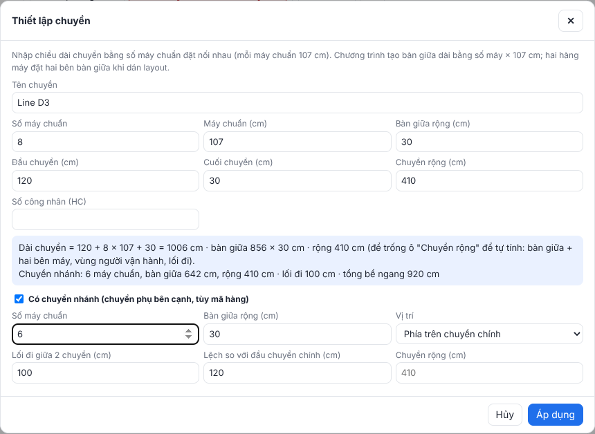
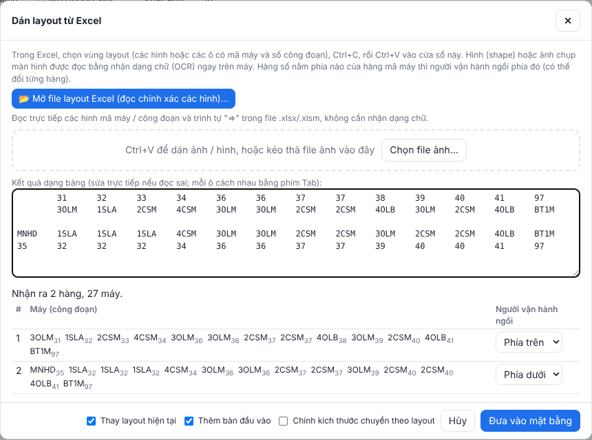
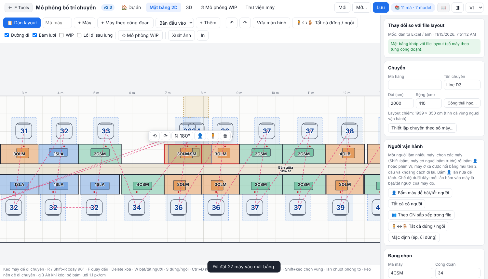
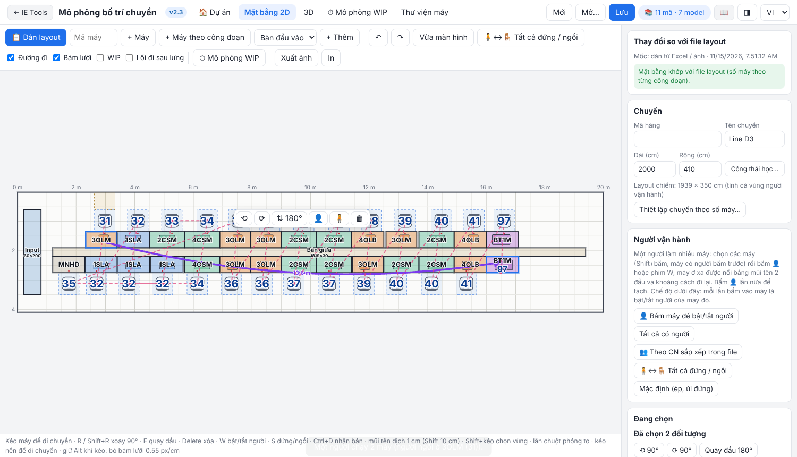
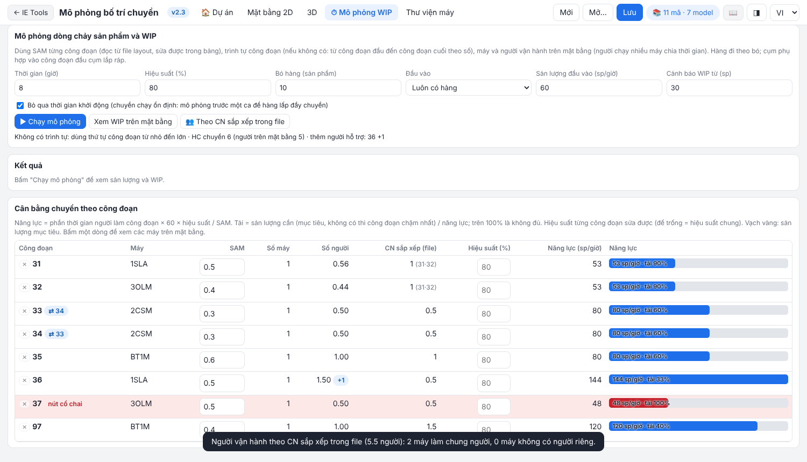
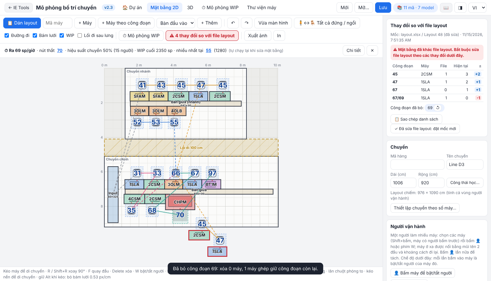
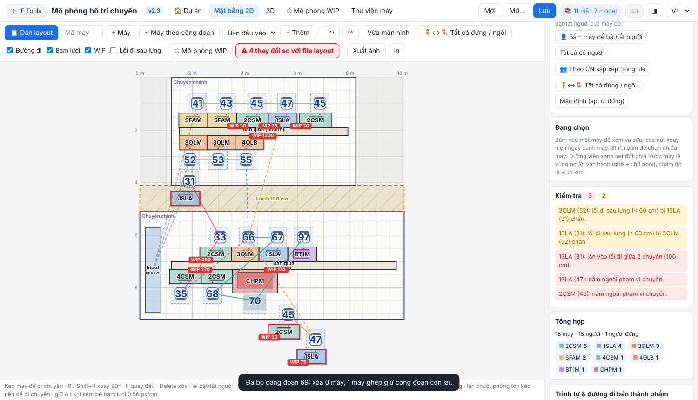
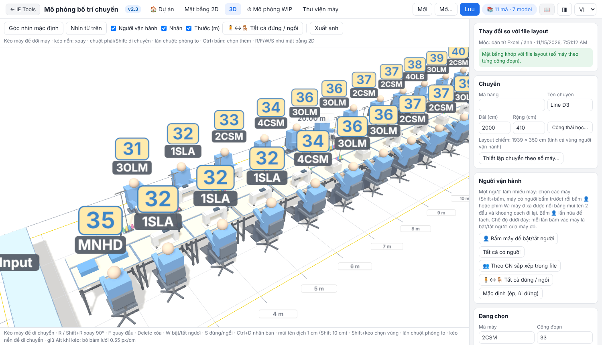
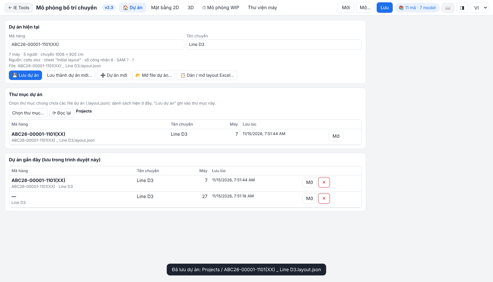

Layout Sim
Mô phỏng bố trí chuyền may theo đúng tỷ lệ: đưa layout từ file Excel vào mặt bằng, sắp xếp máy, kiểm tra vùng người vận hành, tính quãng đường đi của bán thành phẩm, mô phỏng WIP và xem 3D. Chạy trên Chrome hoặc Edge, không gửi dữ liệu đi đâu.
1. Giới thiệu
| Việc | Ở đâu |
|---|---|
| Đưa layout của mã hàng vào chuyền (đọc file Excel layout, dán vùng Excel hoặc dán ảnh) | Tab Mặt bằng 2D, nút 📋 Dán layout |
| Sắp xếp, xoay máy, người vận hành, đứng/ngồi, kiểm tra va chạm và lối đi | Tab Mặt bằng 2D và 3D |
| Thêm/bớt máy theo công đoạn, theo dõi các thay đổi phải sửa vào file layout | Nút + Máy theo công đoạn, thẻ Thay đổi so với file layout |
| Cân bằng chuyền, sản lượng, WIP từng công đoạn | Tab ⏱ Mô phỏng WIP hoặc nút ⏱ Mô phỏng WIP trên mặt bằng 2D |
| Lưu, mở dự án | Tab 🏠 Dự án, nút Lưu (Ctrl+S) |
| Thư viện máy (kích thước, model) | Tab Thư viện máy |
2. Lần đầu sử dụng
- Mở
layout-sim/LayoutSim.htmltừ trang chủ IE Tools (nút Mở Layout Sim) bằng Edge hoặc Chrome. Fileocr-engine.jsphải nằm cạnh file HTML (dùng cho chức năng dán ảnh). - Hộp Nơi lưu dự án hiện ra: bấm 📁 Chọn thư mục…, chọn thư mục để lưu các dự án layout (trên máy hoặc thư mục chung), bấm Cho phép / Allow. Có thể bấm Để sau.
- Bấm chip thư viện ở góc phải trên (📚 … mã · … model) và chọn file Excel thư viện máy của công ty (xem mục 3).
- Bấm Thiết lập chuyền theo số máy… để nhập kích thước chuyền (mục 4).
3. Thư viện máy
File Excel của công ty (ví dụ Machine_Upload_Template_Master.xlsx) có:
- sheet
Machine_Needle:Machine_Code(mã nhóm máy, ví dụ 1SLM, 2CSM, BT1M),Machine_Name,Machine_Name_VN,Dimension= dài*rộng của mặt bàn máy, đơn vị cm (không gồm ghế và người); - sheet danh sách máy:
Sewing Name,Sewing brand,Sewingmodel.
File chỉ được đọc trên máy tính này, không gửi đi đâu. Mã máy không có kích thước được vẽ theo kích thước mặc định và có cảnh báo trong thẻ Kiểm tra.

4. Thiết lập chuyền
Bấm Thiết lập chuyền theo số máy… trong thẻ Chuyền.
| Ô | Ý nghĩa |
|---|---|
| Số máy chuẩn, Máy chuẩn (cm) | Chiều dài chuyền tính theo số máy chuẩn; mặc định 1 máy chuẩn = 107 cm. |
| Bàn giữa rộng (cm) | Bàn giữa dài bằng số máy × 107 cm, rộng mặc định 30 cm. |
| Đầu chuyền, Cuối chuyền (cm) | Khoảng trống đầu và cuối chuyền (bàn đầu vào, đóng gói…). |
| Chuyền rộng (cm) | Để trống = tự tính theo bàn giữa, máy, vùng người vận hành và lối đi. |
| Số công nhân (HC) | Số người của chuyền dùng cho mô phỏng WIP. Để trống = lấy số công nhân trong file layout. |
| Có chuyền nhánh | Chuyền phụ bên cạnh (tùy mã hàng): số máy, bàn giữa, vị trí trên/dưới, lối đi giữa 2 chuyền (mặc định 100 cm), độ lệch so với đầu chuyền chính. |


Nút Công thái học…: kích thước vùng người ngồi/đứng, ghế, lối đi sau lưng, khoảng cách giữa các hàng máy.
5. Đưa layout vào mặt bằng
Bấm 📋 Dán layout. Có ba cách:
- Mở file layout Excel (cách chính xác nhất): bấm 📂 Mở file layout Excel (đọc chính xác các hình)…, chọn file
.xlsx/.xlsm. Chương trình đọc các hình mã máy + số công đoạn, hoặc layout ghi trong ô (một hàng mã máy, số công đoạn ở hàng trên/dưới), trên mọi sheet. Chọn layout trong danh sách (sheet, số hàng, số máy). Nếu có chuyền nhánh, chọn layout thứ hai cho chuyền nhánh. - Dán vùng Excel: sao chép vùng layout trong Excel, dán (Ctrl+V) vào ô văn bản.
- Dán ảnh: dán ảnh chụp layout; chương trình nhận dạng chữ ngay trên máy (không cần mạng). Kiểm tra lại các mã đọc được.
Cùng lúc chương trình đọc từ file: mã hàng (ô B3, D3, D4, B11, tên sheet/file, giống IE Báo cáo máy), số công nhân, SAM, phiên bản OBD, sản lượng mục tiêu, hiệu suất, bảng công đoạn (SAM, loại máy, cột Arrange. Optr / CN sắp xếp) và trình tự 31=>32=>….


- Thay layout hiện tại: bỏ các máy cũ (giữ bàn giữa). Bỏ tích để thêm vào mặt bằng đang có.
- Chỉnh kích thước chuyền theo layout: chuyền rộng/dài theo layout khi chưa thiết lập chuyền.

6. Sắp xếp máy trên mặt bằng 2D
- Kéo máy để di chuyển; kéo nền để di chuyển khung nhìn; lăn chuột để phóng to. Shift+kéo trên nền: chọn nhiều máy.
- Bấm vào máy: hiện thanh nút nổi ⟲ ⟳ ⇅ 180° 👤 🧍 🗑. Thẻ Đang chọn bên phải cho sửa mã máy, công đoạn, tọa độ, góc xoay.
- Ô Mã máy / CĐ + + Máy: thêm máy theo mã, hoặc gõ số công đoạn để thêm đúng máy của công đoạn đó (mục 8). + Thêm: bàn đầu vào, bàn QC, bàn, cột, xe đẩy, vật cản.
- Bám lưới: máy bám theo lưới khi kéo (giữ Alt để bỏ). Lối đi sau lưng: hiện vùng lối đi sau người vận hành.
- Nút ◨ (góc phải trên) ẩn/hiện cột bên phải để có thêm chỗ cho mặt bằng.
Thẻ Kiểm tra liệt kê lỗi (đỏ) và cảnh báo (vàng): máy chồng nhau, vùng người vận hành bị máy khác chắn, lối đi sau lưng bị chắn, máy ra ngoài chuyền hoặc nằm trên lối đi, mã máy chưa có kích thước. Bấm một dòng để chọn máy đó.


7. Người vận hành
- Mỗi máy mặc định có một người vận hành (ghế hoặc chỗ đứng). Bàn ép, bàn ủi mặc định đứng.
- Một người làm nhiều máy: chọn các máy (Shift+bấm, máy có người bấm trước) rồi bấm 👤 hoặc phím W. Máy cạnh nhau được nối bằng mũi tên cong; máy ở xa có thêm khoảng cách đi lại. Bấm 👤 lần nữa để tách.
- 👤 Bấm máy để bật/tắt người: mỗi lần bấm vào máy là bật/tắt người của máy đó. Tất cả có người: trả người cho mọi máy.
- 🧍↔🪑 Tất cả đứng / ngồi và Mặc định (ép, ủi đứng); từng máy: nút 🧍 hoặc phím S.


7.1 CN sắp xếp trong file layout
Khi mở file layout Excel, chương trình đọc cột Arrange. Optr / CN sắp xếp của bảng công đoạn và tự đặt người vận hành trên mặt bằng theo đó:
| Trong file | Trên mặt bằng |
|---|---|
| Ô gộp qua nhiều công đoạn (ví dụ 31, 33, 34 gộp = 1) | Các công đoạn đó do chung số người ghi trong ô. Nếu số máy nhiều hơn số người, các máy gần nhau được giao cho cùng một người (có mũi tên). |
| Công đoạn 0.5 người (ví dụ 46 = 0.5, 47 = 0.5) | Các công đoạn dưới 1 người được ghép theo thứ tự trong bảng cho đến đủ 1 người: một người làm cả 46 và 47. |
| 1.5, 2, 3 … người | Làm tròn lên số người; số máy ít hơn số người thì người thêm là người hỗ trợ trong mô phỏng. |
| 0 người | Máy không có người riêng (do người khác làm). |
| Dòng không có số công đoạn nhưng có số người (máy thêm của công đoạn phía trên) | Cộng vào công đoạn phía trên. |
Thông báo sau khi đặt layout cho biết tổng số người theo file, số máy làm chung người. Nếu đã sửa người vận hành bằng tay và muốn làm lại theo file: bấm 👥 Theo CN sắp xếp trong file (thẻ Người vận hành hoặc trang Mô phỏng WIP).


8. Thêm máy theo công đoạn, bỏ công đoạn
Bấm + Máy theo công đoạn, gõ số công đoạn:
- Chương trình tìm loại máy của công đoạn trong layout (ví dụ 45 → 2CSM) và cho biết số máy đang có. Nhập Số máy thêm, bấm + Thêm máy: máy mới được đặt vào chỗ trống gần máy cùng công đoạn (không còn chỗ thì đặt dưới mặt bằng, kéo vào vị trí).
- Công đoạn không có trên mặt bằng và trong file: nhập mã máy để thêm.
- 🗑 Bỏ công đoạn: xóa các máy của công đoạn; máy ghép (ví dụ “37/42”) chỉ bỏ số công đoạn đó và giữ công đoạn còn lại. Công đoạn cũng được bỏ khỏi trình tự và mô phỏng. Cũng có thể bấm ✕ ở đầu dòng công đoạn trong bảng mô phỏng.

9. Thay đổi so với file layout
Khi đưa layout từ file vào, chương trình ghi lại số máy theo từng công đoạn làm mốc. Mọi khác biệt sau đó (thêm/xóa máy, bỏ công đoạn, đổi công đoạn của máy) hiện trong thẻ Thay đổi so với file layout (đầu cột phải) và nhãn đỏ ⚠ N thay đổi so với file layout trên thanh công cụ.
- Bảng: công đoạn, mã máy, số máy trong file, số máy hiện tại, chênh lệch. Bấm một dòng để chọn các máy đó.
- 📋 Sao chép danh sách: chép danh sách để gửi người sửa layout.
- Công đoạn đã bỏ: nút ↺ khôi phục (máy về đúng chỗ cũ).
- Sau khi đã sửa file layout: bấm ✓ Đã sửa file layout: đặt mốc mới.


10. Trình tự và quãng đường
- Trình tự đọc từ file layout (
Work Flow: 31=>32=>…) hoặc bấm Nhập trình tự…: mỗi dòng một cụm, tên cụm rồi các công đoạn nối bằng=>. Cuối mỗi cụm phụ đi vào công đoạn đầu của cụm lắp ráp (dòng có QC/PACKING hoặc tên “lắp ráp”). - Tích Đường đi để vẽ đường đi bán thành phẩm; thẻ Trình tự & đường đi bán thành phẩm cho tổng quãng đường (m) và từng cụm.
- 💡 Tìm gợi ý cải tiến: các đoạn đi dài, người đi xa giữa hai máy, đổi chỗ hai máy để giảm quãng đường (nút Áp dụng).


11. Mô phỏng WIP
Tab ⏱ Mô phỏng WIP:
- SAM từng công đoạn đọc từ bảng công đoạn trong file layout; sửa được trong bảng.
- Hiệu suất (%): hiệu suất chung (lấy từ file nếu có); cột Hiệu suất (%) trong bảng cho từng công đoạn (để trống = hiệu suất chung).
- Đầu vào: luôn có hàng, hoặc theo sản lượng đầu vào (sp/giờ, mặc định = mục tiêu trong file). Bó hàng: số sản phẩm mỗi bó. Bỏ qua thời gian khởi động: chuyền đã chạy ổn định.
- Số người: theo người vận hành trên mặt bằng (một người nhiều máy chia thời gian theo SAM). Nếu chuyền có HC (Thiết lập chuyền, hoặc số công nhân trong file) khác số người trên mặt bằng: người thêm hỗ trợ công đoạn chậm nhất (+1), thiếu người thì bớt ở công đoạn dư năng lực nhất (−1).
- Công đoạn ghép trên một máy (“37/42”) do một người làm, đánh dấu ⇄ trong bảng.
- Không có trình tự: hàng đi từ công đoạn nhỏ nhất đến lớn nhất.
Bấm ▶ Chạy mô phỏng: sản lượng mô phỏng, năng lực công đoạn chậm nhất (nút cổ chai), hiệu suất chuyền, tổng WIP, WIP cuối ca và WIP lớn nhất từng công đoạn, gợi ý (nút cổ chai, WIP dồn, công đoạn ít việc). Thanh năng lực ghi số sp/giờ và mức tải; trên 100 % là không đủ năng lực.

12. Xem 3D
Tab 3D: máy dựng theo nhóm máy và kích thước thật, người vận hành ngồi/đứng, nhãn mã máy và số công đoạn, thước mét. Kéo nền để xoay, chuột phải/Shift để di chuyển, lăn chuột để phóng to; kéo máy để dời máy; R/F/W/S như mặt bằng 2D.


13. Lưu và mở dự án
- Lưu hoặc Ctrl+S: ghi file
.layout.jsonvào thư mục dự án đã chọn (cùng file cho các lần lưu sau, không phải tải xuống). Tên file theo mã hàng và tên chuyền. - Tab 🏠 Dự án: dự án hiện tại (mã hàng, file/sheet nguồn, công nhân, SAM, OBD), Lưu thành dự án mới…, ➕ Dự án mới, 📂 Mở file dự án…, danh sách file trong thư mục dự án và các dự án gần đây trong trình duyệt này.
- File dự án mang theo kích thước các mã máy đã dùng, mở được trên máy chưa có thư viện.


14. Xuất ảnh, in
Xuất ảnh: ảnh PNG độ phân giải cao (khoảng 3 điểm ảnh/cm, chữ lớn) để gửi cơ điện; ở tab 3D xuất ảnh góc nhìn hiện tại. In: in mặt bằng.
15. Phím tắt
| Phím | Tác dụng |
|---|---|
| R / Shift+R | Xoay máy 90° phải / trái |
| F | Quay đầu 180° |
| W | Người vận hành: bật/tắt (1 máy) hoặc 1 người cho các máy đã chọn |
| S | Đứng / ngồi |
| Delete | Xóa |
| Ctrl+D | Nhân bản |
| Mũi tên (Shift) | Dịch 1 cm (10 cm) |
| Ctrl+Z / Ctrl+Y | Hoàn tác / làm lại |
| Ctrl+S | Lưu dự án |
16. Lỗi thường gặp
| Hiện tượng | Cách xử lý |
|---|---|
| Máy vẽ kích thước mặc định, cảnh báo “chưa có kích thước” | Chọn file Excel thư viện máy (chip 📚); mã máy phải có trong sheet Machine_Needle. |
| Không tìm thấy layout trong file Excel | Layout phải vẽ bằng hình (mã máy + số công đoạn) hoặc ghi trong ô; nếu không, sao chép vùng layout và dán, hoặc dán ảnh. |
| Mô phỏng báo công đoạn chưa có SAM | Nhập SAM trong bảng của trang Mô phỏng WIP. |
| Số người mô phỏng khác số người trên mặt bằng | Do HC của chuyền (Thiết lập chuyền hoặc số công nhân trong file); xem dòng thông tin đầu trang Mô phỏng WIP. |
| Không lưu được vào thư mục | Tab Dự án → Chọn thư mục…, bấm Cho phép. |
| Sau khi cập nhật, giao diện cũ | Nhấn Ctrl+F5. |